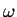
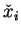
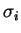
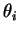

A vortex method is a numerical algorithm for calculating fluid flows.
BlobFlow is restricted to two-dimensional, incompressible, viscous flows
though it is my intent to develop a three dimensional version.
Vortex methods are effective for flows dominated by isolated regions of
vorticity. Examples include vorticity shedding from bluff bodies,
simulation of coherent vortical structures, boundary layers, jets and so
forth. There are situations where vortex methods would not be a good
choice, so it is best to analyze the problem for choosing this algorithm.
is restricted to two-dimensional, incompressible, viscous flows
though it is my intent to develop a three dimensional version.
Vortex methods are effective for flows dominated by isolated regions of
vorticity. Examples include vorticity shedding from bluff bodies,
simulation of coherent vortical structures, boundary layers, jets and so
forth. There are situations where vortex methods would not be a good
choice, so it is best to analyze the problem for choosing this algorithm.
BlobFlow is based on the elliptical core spreading vortex method. A vortex
method is an algorithm that approximates the vorticity field,
is based on the elliptical core spreading vortex method. A vortex
method is an algorithm that approximates the vorticity field,

, of a fluid flow as a linear combination of moving, localized basis functions, sometimes called blobs.
,
, ai and
are functions of time. The evolution equations for these quantities which can be found in [1], are related to the flow velocity and the derivatives of the flow velocity. The centroid of the blob is . The width, aspect ratio and orientation of the blob is . ai2 and , respectively. The total number of blobs, N, is often referred to as the problem size and can be compared to the number of mesh points in a finite difference computation.Where finite difference schemes use mesh points as the fundamental computational element, a vortex method uses moving basis functions so that there is no grid imposed upon the problem. Schemes using elements that move with the flow are called Lagrangian schemes because they are formulated in Lagrangian coordinates that move with the fluid rather than Eulerian coordinates which are fixed in some laboratory reference frame. This is both a strength and a weakness. One of the main strengths is that the method is naturally adaptive. Vorticity moves through the domain as dictated by the governing Navier-Stokes equations. The main disadvantage is the lack of a regular grid. A regular grid has more than aesthetic advantages. Having a regular grid means that memory can be allocated in a geometrically relevant way. In a Lagrangian scheme, no such assumptions can be made.